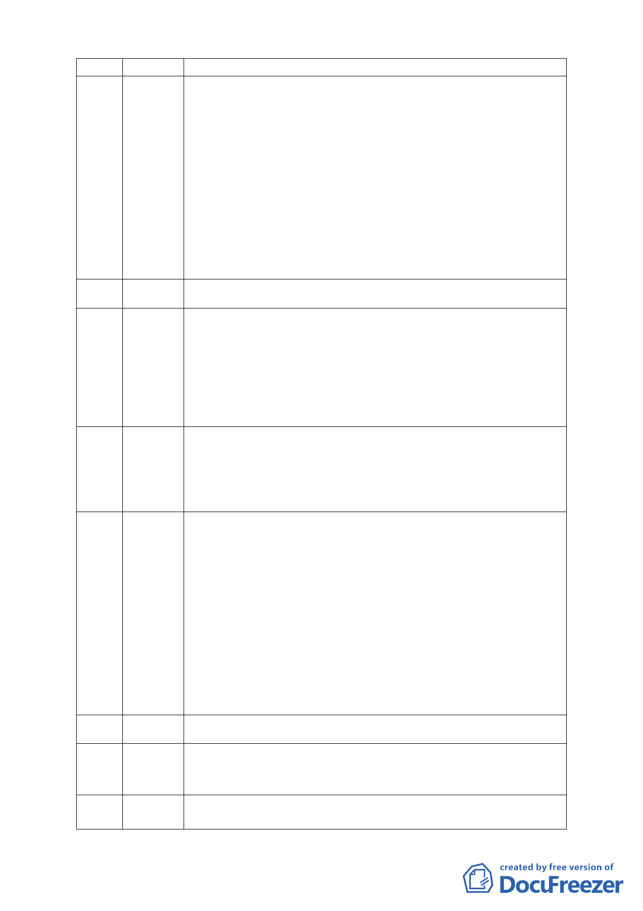

撤案，另覓合適的地方去做對的事，推廣更正確的環境教育。
今天在蘋果日報由內湖保護區守護聯盟刊登了半版的廣告，請慈濟
83 黃詠梅 手下留情放過此保護區，買下半版廣告不是一筆小錢，但跟慈濟買
（黃詩涵代） 下此保護區相比真是九牛一毛，只是希望透過此廣告能將消息告知
所有支持慈濟的人，也能阻止變更開發後所可能帶來的災害，這個
廣告是由部分長期捐款給慈濟的人自己決定要停止其捐款轉而刊
登此廣告。越來越多的長期捐款者因為慈濟要開發此保護區而停止
其捐款。希望全國關心慈濟的民眾都能透過此廣告來讓慈濟回頭是
岸，很多人都認為上人不知道，這個廣告放在同版面阿扁跟阿貞的
下面，似乎也有所引喻，因為阿扁說我也不知道。慈濟如果去買一
塊遭受破壞的地來做保護是好的，就如環保團體救白海豚的示範，
但是如果一直買地來做變更開發就是錯誤的示
範。
（不在現場）
84 黃頌竹
我從來沒想過要來參加這樣的場合，但為了爭取一個安全的居住環
85 江逸萍 境而必須來發言，曾經居住汐止經歷過象神與納莉二次風災，後來
（馮英代） 選擇離汐止最近的內湖落腳，也努力工作想成為台北市的永遠居
民。可是我無法想像郝市長身為一環保專家怎麼能允許這樣的一塊
保護區被開發，市政府應為民眾把關，而非懼於慈濟的財大勢大就
為其護航，如果本案違法通過，提醒委員们可能就犯了圖利瀆職之
公訴罪。
我疑惑的是當初列為保護區的條件消失了嗎？更改了嗎？為何可
86 盧雅秋 以變更。來之前有醫生朋友比喻這種情形就好像幫病人裝一個尿
（盧容序代） 袋，並告知病人其品質良好一般。也好比說本來一個很好的行水區
要予以閹割掉再設一蓄洪池，其蓄洪功能有多好等等。最後他說天
然的最好，這是一個違反自然原則的事情。
今天要針對土地使用管制規則第 15 條的相關規定指出在維持保護
87 邱春美 區不變更的原則下，法規就允許該地附條件做社會福利及水保的相
關設施，慈濟想要做社福及滯洪池皆可以，現況下就可以實現，為
何還要來變更保護區？針對違建緩拆的法規是民國 83 年以前的既
有建物才可以適用，慈濟在民國 87 年才購地，亦即現況使用建物
均屬違建。慈濟非法填土政府不解決、慈濟非法使用違建政府為何
不拆除？政府無能無力解決還要繼續護航變更，政府丟不丟臉、慈
濟知不知恥。只要慈濟做環境改善工作，政府就可以依現況將保護
區納入管理，根本就不須要透過保護區的變更才能將之納入管理。
市政府無能無力管理，還將責任推卸給都委會。請委員思考台灣還
有多少保護區可以浪費，當全球都在進行保護區的保護時，為何委
員還要支持此案。
（不在現場）
88 薛婷臻
如果你有子女居住在此，你會同意此案嗎？我今天來是因為看到有
89 周東漢 人成為弱勢，幫助弱勢也是慈濟的信念，跟慈濟想法一樣，這些人
（代理發言） 須要援助。
l 我是內湖人 , 慈濟園區改善方案目前面臨不是內湖的人 , 確在
90 張益成 環保領域裡高談闊論 , 我要請教反對的教授們 , 首先請教林正
- 12 -